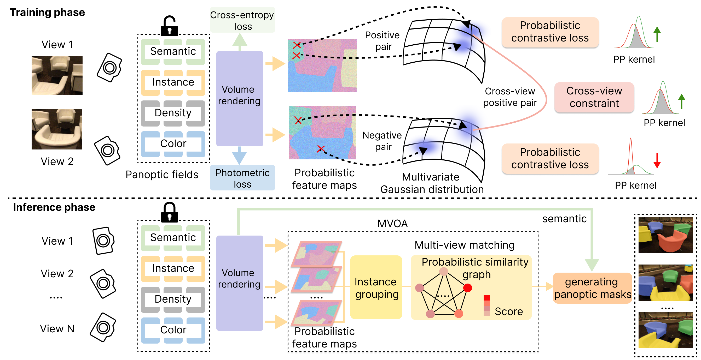
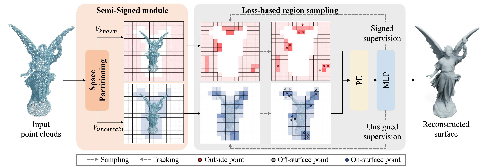

Zhu, Runsong 朱润松
 |
Zhu, Runsong |
About Me
Hi, I am Runsong Zhu (朱润松), a third-year PhD student in CSE, the Chinese University of Hong Kong, supervised by Prof. Chi-Wing Fu, Philip and Prof. Pheng-Ann Heng. Before that, I received my master's degree in LIESMARS, Wuhan University supervised by Prof. Bisheng Yang and Prof. Zhen Dong in 2022 and bachelor's degree in Central South University in 2019.My research is focused on 3D Vision, specifically, I currently work on the topic of multi-view image reconstruction.
News
- [Jul. 2024] Unified-Lift is accepted to CVPR 2025.
- [Jul. 2024] PCF-Lift is accepted to ECCV 2024.
- [Oct. 2023] SSP is accepted to WACV 2024.
- [Aug. 2022] Started PhD journey in CSE, the Chinese University of Hong Kong
- [Jul. 2021] AdaFit was accepted to ICCV 2021 (oral)!
- [Jun. 2021] joined Tencent AI-Lab as a research intern
- [Sept. 2019] Started master journey LIESMARS, Wuhan Univeristy
Publication
|  |
PCF-Lift: Panoptic Lifting by Probabilistic Contrastive Fusion |
|  |
SSP: Semi-Signed Prioritized Neural Fitting for Surface Reconstruction From Unoriented Point Clouds |
 |
AdaFit: Rethinking Learning-Based Normal Estimation on Point Clouds |
Interns
- June, 2021 - June, 2022, Tencent AI-Lab, Research Intern
- June, 2020 - Sept, 2020, DiDi, Machine Learning Engineer Intern
- June, 2018 - Oct, 2018, Baidu Map, Software Engineer Intern
Awards
- 2020 Lidar Congress - Point Cloud Segmentation Track First Prize
- 2019 Unique hackday (Best Technology Award)
- 2019 National GIS Development Competition (First Prize)
- 2018 Mathematical Contest In Modeling (Meritorious Winner)